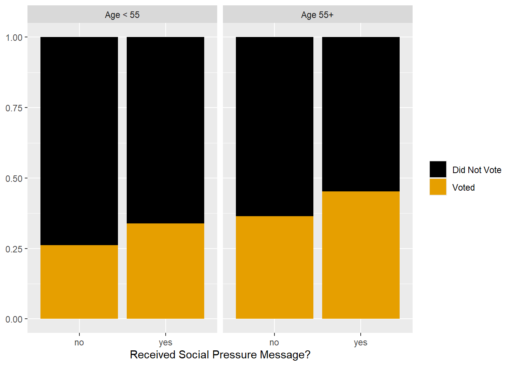
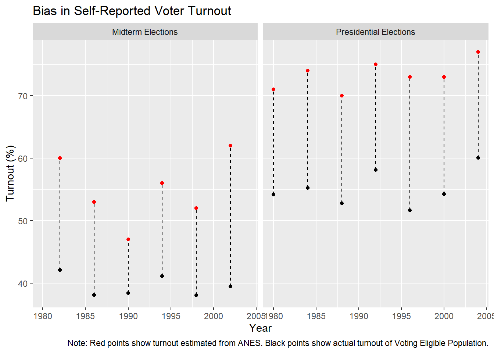

Week 9: Data Visualization
Today we begin Part 2 of the semester. Our goal over the next few weeks is to train you to complete the entire data analysis pipeline: importing raw datasets, tidying them up, joining together information from multiple datasets, making sure everything is formatted correctly, performing statistical analyses, and communicating your results.
We’ll start by discussing data visualization, which is an essential tool at every step along that pipeline. Our brains are hardwired to detect patterns in images, and a well-crafted data visualization can take advantage of that fact to communicate lots of information about your data all at once. This makes visualization a particularly effective tool for communicating results to your audience.
But don’t think that visualization is just something you do at the end of the project when you’re writing up the paper. Charts are a useful diagnostic tool as well, revealing patterns in data that summary statistics alone might miss, as the Datasaurus Dozen artfully reveals…

This week, we dive deeper into building visualizations with the ggplot2 package (a part of the tidyverse). It will take some time to learn all of the function syntax, so be patient with yourself. Once you get the hang of it, you’ll have an endlessly flexible tool for exploring and communicating patterns in your data.
Reading
- R4DS Chapters 1-2
Problem Set
In a knitted R script or Quarto document, complete the following exercises.
- Recreate the following chart using the voting.csv dataset.
- Recreate the following chart using the ANES.csv dataset. Don’t forget the caption. Bonus. Recreate the dashed vertical lines.

Additional Resources
- Kieran Healy’s data visualization textbook is a great step-by-step guide to the practical challenges of visualizing social science data using
ggplot(Healy 2018); online version available here.
References
Healy, Kieran. 2018. Data Visualization: A Practical Introduction. Princeton, NJ: Princeton University Press.